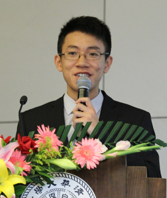

我来自广东省中山市第一中学，因在全国信息学奥林匹克决赛中获得金牌，保送进入清华大学计算机系学习。进入清华园三年以来，我一直以“又红又专，全面发展”作为自己的努力目标，在德智体各方面不断地进行自我塑造和自我完善，力求成为一个真正有益于社会、有贡献于国家的清华人。下面我将从思想、学习、科研、竞赛、公益、文体六个方面，阐述我在三年大学生活中所取得的一点成果。
思想政治方面，自我在2009年4月6日加入中国共产党以来，我一直在各方面对自己严格要求。当我作为一名新生党员进入清华时，清华大学浓郁的红色氛围让我对党员的身份又有了全新的认识。无论是过去从清华校门走向社会，在各行各业作出贡献的校友，还是身边以校为家，深入关心同学们学习生活的辅导员，都让我认识到清华党员的与众不同，他们对人民群众有更无私的奉献靖神，对国家有更强烈的责任感。有此感悟后，我也对自己提出了带头为人民服务，对国家尽职尽责的要求，以求不负党员的身份，不负清华之名。为了带头服务群众，在入学军训期间，我就担任了七连三排的副排长，担当起同学与教官的桥梁。之后我又担任了计93班团支书，计92党支部组织委员和支部书记等职务。作为党支部书记期间，我经常思考如何让支部成员能够在党支部的环境中逐步提高思想觉悟，增强个人能力。为此我努力做好每一次支部活动，先后组织支部成员参加了寒假读书计划，清华大学职业生涯教练计划，与离退休教工党支部的联合组织生活，在职教工访谈和校友访谈等活动。大四伊始，当面临出国和推研的出路选择时，我坚定地选择留在国内，跟随清华大学计算机系唐杰老师读研深造，希望日后能够为祖国的信息化事业贡献自己的一份力量。在2012年6月，我由于表现优异，获评“清华大学优秀共产党员”。
学习方面，获得保送清华大学资格的我在当年也经历了高考的洗礼，然而遗憾的是，我所取得的分数不如人意，与清华大学的录取分数线存在不小的差距，这让我深深警惕。因此在进入清华之后，我痛定思痛，正视自己与身边的同学间的差距，以加倍的认真和努力投入到每天的学习中。三年里，我筑梦踏实，一步一个脚印。当面对计算机组成原理课程的大实验时，由于实验的每次调试都需要花费大块的时间，而我在白天还有实验室的工作。因此，为了做好课程大实验，同时不影响实验室工作的进度，我在白天完成实验室的任务，然后傍晚开始编写和调试大实验的代码。在做大实验的一周时间内，我每天都编写和调试程序到凌晨才回寝室休息，最终顺利完成实验。而在数据库课程的大实验布置之后，我早早就开始研究相关算法并对各种算法的效率反复进行实验对比，最终完成的大实验程序比该课程绝大部分同学的程序都要快百倍有余。在这样的付出下，我每年学业排名在年级中都稳步提升，大学三年每年的学业成绩均名列年级前列。
科研方面，由于对科学探索的浓厚兴趣，早在大二秋季学期，我就进入了清华大学计算机系唐杰老师的实验室从事科研。而我的科研之路在开始之后就再也没有停止下来。在唐杰老师的指导下，我参加了国家核高基项目和学术搜索引擎ArnetMiner开发两个科研项目，均顺利完成，并在项目进展过程中很好地锻炼了自己的工程研发能力。之后我有幸和计算机科学领域最高荣誉图灵奖的获得者康奈尔大学的John Hopcroft教授合作，完成学术论文一篇，提交到了数据挖掘领域最顶级的期刊ACM Transactions on Knowledge Discoveryfrom Data（TKDD），并且目前已经通过了两轮审阅。到了大三春季学期，虽然平日的课程繁重，但是我并没有停止科研方面的工作，而是和实验室的同学以及华为公司的两名科研人员一起组队参加了数据挖掘领域最顶级的会议Special InterestGroup on Knowledge Discovery and Data Mining （SIGKDD）举办的数据挖掘大赛KDD Cup 2012。在比赛中，我担任了团队中的队长，这要求我不仅做好自己的工作，而且还要协调好队员的合作和分工，从而提高效率，最大限度地争取好成绩。面对这个新的考验，我依然在队长一职上出色地完成了任务。最终，我们的队伍经过3个月的努力，在汇聚了全球一流大学和顶尖科研机构的658支参赛队伍中获得第8名的好成绩。目前我参与了实验室和微软亚洲研究院首席研究员陈卫博士合作的项目，负责项目中全部的实验，该项目还在进行中。
学科竞赛方面，保持着高中阶段对信息学竞赛的热情，在进入大学之后，我在学科竞赛上依然表现得十分积极和活跃。三年来，我参加了十余次程序设计竞赛，并逐渐学会了在竞赛过程中享受为了做得更好而不断挑战自我，挑战对手的过程。我六次参加ACM大学生程序设计竞赛亚洲赛，均获得金牌。在大一和大二的暑假，我分别参加了面向全国的“有道难题-网易编程挑战赛”和“百度之星程序设计大赛”，都成功从数万名参赛选手中晋级到由前50名选手组成的现场决赛。在大三暑假，我代表北京清华大学参加在新竹清华大学举行的 “两岸清华暨香港科技大学程序设计竞赛”，并最终获得冠军。
社会工作和志愿服务方面，带头为群众服务是我对自己的要求。在大一学年，我担任了计93班团支书。期间，我通过组织班内的文体活动和成立班内的自习小组，加强班级同学间的感情建设以及班级的学风建设。而在我的努力和同学们对我工作的鼎力支持下，计93班也逐步成长为一个凝聚力强、力争上游的集体，两次获得了系甲级团支部、一次获得校甲级团支部的称号。进入大二以后，我带着大一积累的经验，更加积极地参加各项社会工作，在计93班、系科协、校团委和计92党支部均曾担任职务，协助组织了计算机系挑战杯科展、计算机系智能体大赛等活动，并在其中锻炼了能力，获取了成绩。在大一暑假，我参加了赴甘肃省定西市百页村百页小学为期一周的支教活动，让贫困山区的孩子能够更多地了解山外的世界。在过去的百年校庆中，我带领支部成员积极参与到系友接待的志愿工作中。在这些活动中，我走出了象牙塔，通过自己的能力为自己能影响到的人带来切实的帮助，在这个过程中，我付出了汗水和心血，同时收获了与学业上所不同的喜悦和满足。而我做的工作，也不断地得到身边同学的认可，大学三年，我的素质测评排名一直上升，分别是班级的第4名、第2名和第1名。
文体方面，我积极响应学校“为祖国健康工作五十年”的号召，积极参加体育锻炼。从大一到大三，我每年都参加清华大学“马约翰”杯运动会和计算机系“钟士模”杯运动会。在马杯田径运动会的赛场上，我三年均参加了男子4×400米项目，并不断实现突破，在大二学年获得该项目银牌之后终于在大三学年获得了该项目的金牌。在三届“钟士模”杯运动会中，我收获了一枚银牌，三枚铜牌。除了田径之外，平时我还爱好篮球。在大一学年我就作为主力替补代表计算机系参加校新生杯篮球赛，并打入八强，之后加入系篮球队。除了注重自身体育锻炼之外，我非常乐于带动身边的同学参与到体育锻炼中。作为计93班篮球队队长，我每周都会组织班上篮球队的同学进行训练，让大家都参与到体育锻炼中来。除了平时的训练外，在赛前我会带领队员根据对手特点进行针对性训练，在赛后，我会组织所有球队成员总结比赛中的不足。经过三年的努力，在大三学年，我成功带领计93班篮球队获得计算机系篮球赛冠军，完成了从小组垫底到冠军的蜕变。
每只大鹏都曾经是普通的幼鸟，但不是每只幼鸟都能成长为翱翔于苍穹的大鹏。感谢学校和老师三年来的悉心栽培，让我拥有了一个又一个成长的机会，今日才得以在往昔不曾想象的高度搏击长空。今后我将一如既往地勤奋学习，踏实工作，服务大众，锤炼思想，力争在各方面更上一层楼，为国家、为社会绽放自己的每分光和热，在其中实现自己的价值！